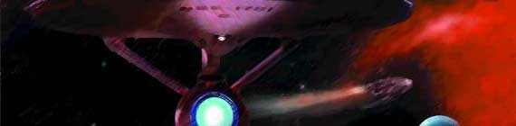
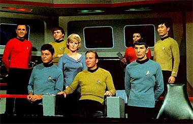
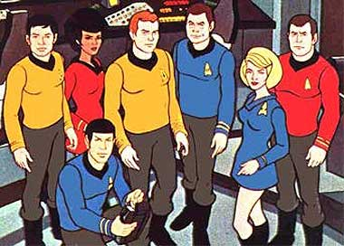
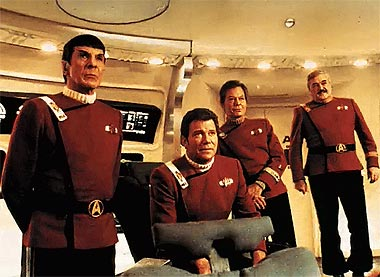
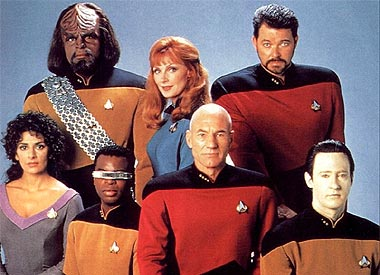
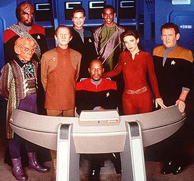
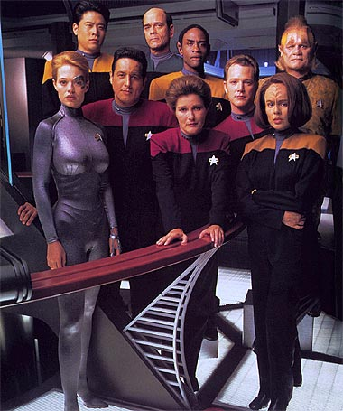
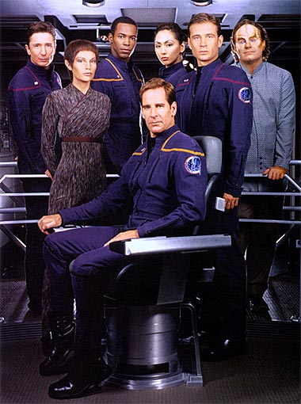

| e para você é um completo mistério o fato de Jornada nas Estrelas ter crescido de um seriado fracassado dos anos 60 a um verdadeiro ícone da cultura contemporânea, esse é um bom lugar para começar a procurar as respostas. Tenha um panorama rápido das aventuras e desventuras pelas quais Jornada passou até se tornar o verdadeiro gigante do entretenimento que é hoje. São quase 40 anos de história compactados em um texto. |

|

| Jornada
nas Estrelas (Star Trek) foi a primeira tentativa de fazer ficção científica
séria com personagens fixos da história da televisão americana. Antes dela, uma
outra série de ficção já fazia grande sucesso, "The Twilight Zone" (conhecida
no Brasil como "Além da Imaginação"), mas era de natureza antológica -- uma coleção
de histórias sem personagens fixos, exceto pelo apresentador (que era o próprio
criador da série, Rod Serling). A idéia básica por trás do seriado era bem simples: as aventuras da galante tripulação de uma nave espacial terrestre nos confins do espaço, em algum ponto do futuro (que acabou, posteriormente, sendo definido como meados do século 23). Os humanos estariam em situação muito melhor que a atual, e a Terra seria um paraíso, sem conflitos, guerras ou problemas sociais. Restaria aos terráqueos apenas a busca pelo desconhecido, novos mundos e civilizações, como forma de aprimorar ainda mais sua sociedade e seu conhecimento. O conceito da série foi desenvolvido no início dos anos 60 por Gene Roddenberry, um homem que conhecia bem as piores facetas da humanidade, tendo sido ex-piloto de aviões (militar e depois civil) e ex-policial. Seu sonho sempre foi o de se tornar escritor, e começou a se realizar durante o período em que esteve no Departamento de Polícia de Los Angeles. Gene começou a escrever alguns roteiros policiais para TV, usando sua experiência pessoal como fonte de histórias, e o sucesso acabou levando-o a deixar a polícia e a se tornar um conceituado escritor de televisão, eventualmente atingindo o status de potencial criador de pilotos para novas séries. Jornada foi a segunda série que Gene conseguiu vender (a primeira havia sido o seriado policial "The Lieutenant", que durou apenas uma temporada). O projeto foi comprado pela Desilu, um estúdio então em fase de decadência depois do enorme sucesso obtido nos tempos de "I Love Lucy". O objetivo da empresa era usar Jornada como uma forma de recuperar o prestígio. Com um estúdio já convencido a trabalhar no projeto, Gene Roddenberry precisava vender a idéia a uma rede de televisão, que bancaria a empreitada e exibiria o programa. Acabou conseguindo convencer a NBC de que Jornada nas Estrelas era uma idéia realizável, o que levou à produção de um piloto, em 1964. Esse primeiro episódio, chamado hoje de "The Cage" (embora o título da época fosse "The Menagerie", a Paramount decidiu chamá-lo de "The Cage" para não confundir com o episódio da Série Clássica que ganhou o nome original do piloto), tinha uma tripulação atualmente pouco conhecida, encabeçada pelo famoso ator Jeffrey Hunter (protagonista do filme "Rei dos Reis", interpretando Jesus Cristo) como o capitão Christopher Pike. Do elenco que acabaria se fixando na série, apenas Leonard Nimoy, como o alienígena Spock, estava presente. Os executivos da NBC gostaram do piloto, mas acabaram recusando-o, ao alegar que ele era inteligente demais para a supostamente medíocre audiência de televisão. Normalmente, quando um piloto é vetado pela rede, acaba o sonho de se realizar a série. Mas, num ato sem precedentes, a NBC, em vez de engavetar a idéia, decidiu encomendar um segundo piloto. Uma nova história foi produzida em 1965: "Where No Man Has Gone Before". Jeffrey Hunter e seu Pike, um dos poucos personagens não vetados pela NBC, não quiseram retornar. William Shatner foi contratado para viver o novo capitão, James T. Kirk. Com mais ação, o segundo piloto foi capaz de convencer a rede a encomendar uma temporada. O primeiro ano da série foi exibido em 1966-1967, destacando as aventuras de uma nave da Frota Estelar em pleno século 23, a USS Enterprise, e sua tripulação, composta por Kirk, Spock, o médico de bordo Leonard McCoy (DeForest Kelley), o engenheiro Montgomery Scott (James Doohan), o timoneiro Sulu (George Takei) e a oficial de comunicações Uhura (Nichelle Nichols). O navegador russo Pavel Chekov (Walter Koenig) só iria se juntar à trupe na temporada seguinte.  A série rapidamente recebeu aclamação nos círculos da ficção científica e reuniu um grupo de fãs fervorosos. Grandes escritores literários do gênero, como Harlan Ellison e Theodore Sturgeon, redigiram episódios para a série. Mas o programa falhou em sua missão principal: arregimentar um público grande o suficiente para manter a exibição na NBC. Campanhas sucessivas de cartas dos fãs conseguiram sustentar a série por três temporadas, mas em 1969 a NBC estava decidida a cancelar o projeto. Um ano depois, o instituto Nielsen, responsável pelas medições de audiência da TV americana, iria mudar sua metodologia de trabalho, classificando a audiência de acordo com o tipo de público que cada programa atingia. Com isso, a NBC fez a infeliz descoberta de que o cancelamento de Jornada havia sido um erro: o programa não tinha uma audiência estupenda, mas atingia exatamente o público que a rede queria -- jovens adultos do sexo masculino, com bom poder aquisitivo. Paralelamente, a Paramount Pictures (que havia comprado a Desilu em 1968 e dado continuidade à produção de Jornada) estava fazendo dinheiro vendendo os episódios da série para reprises em estações locais de TV em todos os EUA. Logo ficou claro que Jornada nas Estrelas estava se tornando uma mania. Convenções começaram a ser organizadas nos anos 1970, lotando auditórios com pessoas ávidas por rever seus episódios favoritos e ouvir as pessoas que fizeram parte da produção do programa. A NBC começou a achar que precisava de algum modo reviver Jornada nas Estrelas. E foi o que eles fizeram, quando chamaram Gene Roddenberry para conversar. Discutiu-se rapidamente a possibilidade de restaurar o programa original, mas a decisão final foi de produzir uma série de desenhos animados -- mais barata e voltada para o público infantil. A Série Animada decolou em 1973, produzido pelo estúdio Filmation, que mais tarde faria clássicos da animação televisiva como "He-Man" e "She-Ra", e exibido pela NBC aos sábados de manhã. Apesar das limitações técnicas e da redução do tempo dos episódios dos 51 minutos da época da série filmada para apenas 23 minutos, o programa mais uma vez se tornou sucesso de crítica. E, mais uma vez, não teve público suficiente para mantê-lo no ar. Os episódios claramente eram muito desenvoltos para uma série infantil. O desenho resistiu por duas temporadas e 22 episódios, antes de ser cancelado.  Ainda assim, a Paramount viu em Jornada nas Estrelas um enorme potencial para ganhar dinheiro -- e estava decidida a explorar totalmente aquela recém-descoberta mina de ouro. Primeiro, os executivos pensaram em produzir um filme de baixo orçamento, mas nenhum roteiro adequado acabou aparecendo. Depois decidiram recriar a série de televisão com o mesmo elenco, mas novos cenários e valores de produção, numa ousada tentativa de criar uma quarta rede nacional de televisão (na época só havia três, NBC, CBS e ABC). Sob a batuta do criador Gene Roddenberry, em 1977 treze roteiros chegaram a ser escritos para a nova série, que se chamaria Jornada nas Estrelas: Fase II (Star Trek: Phase II), antes que a Paramount desistisse dos planos de criar uma rede de TV e transformasse o projeto em "Jornada nas Estrelas: O Filme" ("Star Trek: The Motion Picture"). A produção, também comandada por Gene Roddenberry, com direção do aclamado Robert Wise (o mesmo diretor de "A Noviça Rebelde" e "O Dia em que a Terra Parou"), estourou todos os orçamentos e quase não terminou no prazo. Mas logo que estreou, em 1979, tornou-se um enorme sucesso de bilheteria, levando o estúdio a imediatamente cogitar uma continuação. Uma coisa entretanto estava clara: Roddenberry não era um bom produtor de cinema. Harve Bennett foi contratado para tomar as rédeas de "Jornada nas Estrelas II: A Ira de Khan" ("Star Trek II: The Wrath of Khan", de 1982), e o criador da série foi convertido em mero consultor. Bennett conseguiu economizar cada tostão, fazendo o filme mais lucrativo da história da franquia, e um dos mais aclamados pelo público e pela crítica. O único senão era a morte do personagem Spock, evento que causou inúmeros protestos entre os fãs. Mas a Paramount se sentiu muito feliz quando esses mesmos fãs "clamaram" por "Jornada nas Estrelas III: À Procura de Spock" ("Star Trek III: The Search for Spock", de 1984) para reviver o personagem. Como novidades, o filme promovia a destruição da Enterprise e trazia Leonard Nimoy em sua estréia como diretor de cinema.  Nimoy fez um bom trabalho e foi chamado de volta para dirigir "Jornada nas Estrelas IV: A Volta Para Casa" ("Star Trek IV: The Voyage Home"), em que Kirk e cia. voltam ao século 20 para resgatar duas baleias para salvar a Terra de uma sonda alienígena que tentava fazer contato com os animais, já extintos no século 23. O filme simplesmente se tornou a maior bilheteria nos EUA da história dos filmes de Jornada, quando estreou, em 1986. A esta altura, estava muito claro que Jornada nas Estrelas era uma mina de ouro praticamente inesgotável para a Paramount. O estúdio resolveu então inovar e aproveitar a comemoração dos 20 anos da série original para anunciar a produção de um novo programa de televisão: Jornada nas Estrelas: A Nova Geração (Star Trek: The Next Generation). Com uma nova tripulação, encabeçada pelo capitão Jean-Luc Picard (Patrick Stewart), o primeiro-oficial William Riker (Jonathan Frakes) e o andróide Data (Brent Spiner), e uma nova Enterprise, viajando um século depois das viagens de Kirk e cia., Roddenberry foi chamado de volta à cadeira de comando de uma série de TV.  A Nova Geração estreou nos EUA em 1987, com uma outra inovação: a exibição em caráter de syndication (a venda do programa diretamente às estações locais, sem uma rede nacional que o sustentasse). O sistema é bem comum para programas que já foram uma vez exibidos por uma rede, mas era totalmente inusitado produzir episódios inéditos de uma série para serem exibidos nesse sistema. Apesar disso, A Nova Geração foi um sucesso absoluto, arregimentando uma base de audiência bastante ampla e abrindo caminho para vários outros programas de ficção científica que surgiriam depois, como "Arquivo-X", "Babylon 5", "Terra: Conflito Final", "Farscape", "Andromeda" e outros. Enquanto isso, no cinema as coisas continuavam bem. William Shatner teve sua chance de dirigir um filme com "Jornada nas Estrelas V: A Última Fronteira" ("Star Trek V: The Final Frontier"), em 1989, que, apesar do fraco resultado em termos de qualidade e bilheteria, levou à derradeira aventura da série original nas telonas, "Jornada nas Estrelas VI: A Terra Desconhecida" ("Star Trek VI: The Undiscovered Country"), em 1991. No mundo da TV, A Nova Geração estava indo muito bem, mas não seu criador. Gene Roddenberry estava com a saúde cada vez mais debilitada, e o produtor começou a transferir suas responsabilidades para Rick Berman. Em 1991, com a morte de Roddenberry e o fim da série de filmes da série original, Berman assumiu o comando total da franquia, coordenando as produções de cinema e TV. Preparando a transferência da tripulação de A Nova Geração para as telas de cinema, para assumir o lugar vago deixado pelos atores clássicos, Berman e a Paramount decidiram criar uma terceira série de TV, com uma nova tripulação. Desta vez, entretanto, a ação iria se passar a bordo de uma estação espacial nos confins da galáxia e tudo aconteceria na mesma época em que a turma da Nova Geração vivia. Berman convocou o escritor Michael Piller, responsável pela bem-sucedida criação de uma "cara" diferenciada para A Nova Geração com relação ao seriado original, para desenvolver a série com ele. Em 1993, o projeto chegaria às telinhas, com o nome de Jornada nas Estrelas: Deep Space Nine (Star Trek: Deep Space Nine).  Pela primeira vez destacando um protagonista negro na história da franquia, Deep Space Nine estreou com índices arrebatadores de audiência (até hoje detém o recorde em Jornada nas Estrelas, obtido com o piloto "Emissary"), mas o fato de ter sido exibida enquanto A Nova Geração ainda estava no ar acabou iniciando um processo de erosão da audiência. Em 1994, A Nova Geração deixou as telinhas para imediatamente ter sua primeira aventura no cinema. O filme "Jornada nas Estrelas: Generations" (Star Trek: Generations) reuniu a tripulação de Picard a James T. Kirk, em sua derradeira aventura. Apesar do anticlímax do final, em que Kirk é morto, o filme foi bem-sucedido em pavimentar o caminho para mais uma continuação cinematográfica. Enquanto isso, a Paramount resolveu tirar da gaveta aquele velho projeto de criar uma nova rede de televisão. Para tanto, o estúdio queria mais um seriado de Jornada como carro-chefe. Em 1995, nascia Jornada nas Estrelas: Voyager (Star Trek: Voyager), série também ambientada em época contemporânea à da Nova Geração e que contava a história de uma nave, capitaneada por uma mulher, atirada para o outro lado da galáxia por uma força desconhecida. Isolada, sua única missão passaria ser a de sobreviver e voltar para casa, o que deveria consumir mais de 70 anos de viagem.  Diferentemente de A Nova Geração e Deep Space Nine, que eram exibidas em regime de syndication, Voyager foi para essa nova rede da Paramount, a UPN. A fraca infraestrutura da instituição, entretanto, aliada ao desgaste da marca Jornada nas Estrelas, saturada pelos inúmeros produtos e spin-offs, fizeram com que Voyager mostrasse um sólido e constante declínio na popularidade da franquia. No cinema, entretanto, as coisas ainda andavam bem. Em 1996, chegava às telonas a segunda aventura da Nova Geração, "Jornada nas Estrelas: Primeiro Contato" ("Star Trek: First Contact"). O filme se tornou um espetacular sucesso de bilheteria, o que acabou conduzindo a "Jornada nas Estrelas: Insurreição" ("Star Trek: Insurrection"), em 1998. Mas naquele ponto a marca já estava desgastada demais para sustentar um grande público, e a qualidade também não ajudou. O décimo longa, "Nêmesis", de 2002, seguiu o mesmo caminho e fracassou nas bilheterias. Apesar da ladeira da franquia, tanto Deep Space Nine quanto Voyager atingiram a marca da Nova Geração, tendo sete temporadas produzidas. Em 2001, era hora de criar uma quinta série com atores para substituir Voyager na UPN. Nascia Enterprise, uma prequel que contava as aventuras da primeira Enterprise, cem anos antes da nave de Kirk. Para comandar o elenco foi contratado Scott Bakula, ator já famoso por seu papel na série sci-fi "Quantum Leap".  A série durou 4 temporadas, sendo encerrada em maio de 2005. Durante seus três primeiros anos, esteve um pouco perdida, preferindo enfocar mais um assunto criado para a ocasião, como a Guerra Fria Temporal, ou um ataque que quase dizimou a Terra efeutado pela raça Xindi. Porém, a partir de sua quarta temporada, temas oriundos da Série Clássica foram explorados e Enterprise se despediu com dignidade. Após o término de Enterprise, os fãs se encontram num hiato entre produções que deverá durar alguns anos. É hora de aproveitar para rever esses 40 anos de Jornada, sempre em busca de algo que ainda não tenha sido totalmente explorado em seus mais de 700 episódios e 10 filmes para cinema. |